I break things so users don't have to. 4+ years ensuring software quality through manual and automation testing, and continuous improvement.
I started my career as a Manual QA Tester, focusing on e-commerce platforms and enterprise applications. Throughout my journey, I discovered a passion for automation and software quality engineering.
Today, I combine manual testing expertise with automation frameworks such as Selenium, Playwright, Robot Framework, and Python/AI based solutions to improve product quality and testing efficiency.
describe('User Authentication', () => { it('should handle invalid tokens', async () => { const res = await request(app) .get('/api/profile') .set('Authorization', 'Bearer invalid'); expect(res.status).toBe(401); expect(res.body.error).toBe('Invalid token'); }); });
Developed a comprehensive automation framework using Selenium WebDriver and Java to streamline testing processes and improve test coverage.
Developed a robust automation framework using Cypress and javascript to enhance end-to-end testing capabilities and improve test reliability.
Developed an innovative automation solution using Playwright and AI to improve test coverage and reduce maintenance overhead.
Deepening Python skills for test automation and scripting.
Modern end-to-end testing with Playwright and Python.
Leveraging AI for test generation, analysis, and maintenance.
OWASP, penetration testing, and security automation.
Pipeline orchestration, continuous testing, and delivery.
Being colorblind has strengthened my focus on accessibility and user experience validation. I actively consider accessibility scenarios to help create more inclusive digital products.
Have a project, role, or just want to talk QA? Drop me a message.
